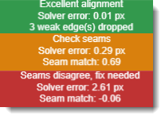
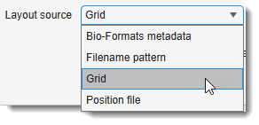
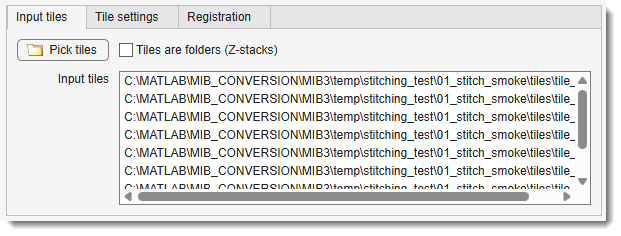
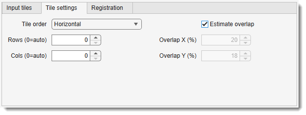
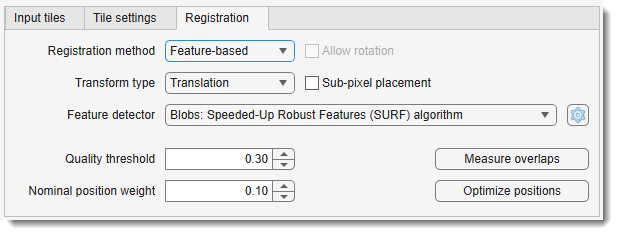
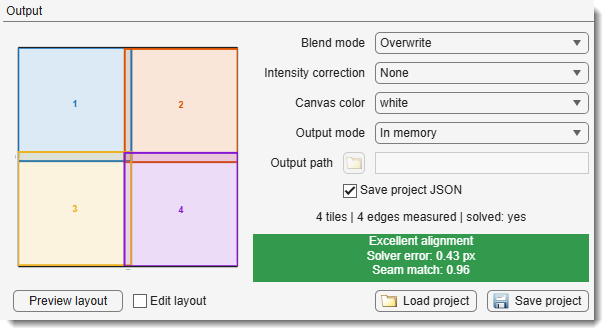

Stitching¶
Back to MIB | User interface | Ribbon | Dataset
Overview¶

The Stitching tool assembles a collection of 2D/3D image tiles into a single large mosaic.
It starts from a rough placement:
- regular grid (including custom positioning)
- position file (TrakEM2, Fibics Atlas, SerialEM)
- filename pattern
- stage coordinates stored in the image metadata
then measures the true overlap between neighbouring tiles, finds a globally consistent position for every tile, and fuses them into a new dataset.
3D tiles (Z-stacks) are supported: the within-layer (XY) and between-layer (Z) constraints are solved together in one pass, not stitched in 2D and aligned afterwards.
Small mosaics are assembled in memory; larger ones can be streamed to an OME-Zarr file and opened as a BigData dataset, or written straight out as ordinary TIF / PNG / Amira files.
The window at a glance¶
The dialog is arranged top to bottom in the order you work through it:
| Area | Contains |
|---|---|
| Header | - how the tiles are arranged. It governs the whole dialog, so it sits above everything else; the italic line under it explains the selected mode. |
| Settings tabs | One tab per question: (which files), (how they are arranged), (how they are matched). |
| Output panel | Layout preview on the left; output, blend and project settings on the right; underneath, the status line and the colour-coded alignment-quality chip. |
| Action strip | Always reachable: help, , , , . |
The stitching pipeline¶
Stitching takes five steps, worked through top to bottom. On a familiar acquisition, set up the first two and press . It performs every remaining step by itself. On an unfamiliar one, run the steps individually so you can check each intermediate result before committing to the next.
-
Choose the layout source (header) - state how the tiles are arranged: a regular , a , a , or . This decides which settings below are enabled, so it comes first. → Layout source
-
Pick the tiles and preview (use the tab, then ; use the tab to tune the tile placement) - select the files, folders or position file, then draw the nominal arrangement as numbered rectangles. Check the grid size, tile order and overlap here, before any heavy computation. Tick to drag tiles into a better rough position by hand. → Input tiles tab, Tile settings tab
-
Measure overlaps ( tab) - for every neighbouring pair, the expected overlap is cut from both tiles and their actual displacement is measured. Each measurement gets a quality score from 0 to 1; anything below the threshold is marked invalid. → Registration tab
-
Optimize positions ( tab) - turns those relative measurements ("tile 5 sits 342.7 px right of tile 4") into final positions. Rather than chaining tiles one after another, which accumulates drift, one global least-squares problem is solved over the whole tile graph: every valid measurement is an equation weighted by its quality. Tiles with no usable measurement stay near their nominal position. The preview then redraws at the solved positions and the result is rated by the alignment chip. → Alignment quality
-
Stitch (action strip) - fuses the tile pixels at the optimized positions, blending the overlaps, and opens the result as a new dataset (or writes it to disk). → Output panel
Steps can be skipped
A Fibics Atlas mosaic or a SerialEM montage can bring its own seam measurements and even its own solved placement, in which case steps 3 and 4 are simply not needed. A project file restores all of it.
Alignment quality¶

After a solve, the colour-coded chip under the preview rates the mosaic - Excellent (green) / Good / Fair / Poor (red). It combines two independent checks, both spelled out in its tooltip:
- the solver residual - how much the pairwise measurements still disagree at the solved positions (RMSE in pixels ).
Details
A residual can only appear where the seams form a loop:
in a 2×2 mosaic you can walk 1 → 2 → 4 → 3 → 1, so those four measurements have to add up, and any one of them being wrong shows up as disagreement.
A single row or column of tiles has no loop - each tile is held by one seam only, so every measurement can be honoured exactly and the residual reads ~0 no matter how wrong they are. On such layouts judge the mosaic by the pixel seam check below
- the pixel seam check - the overlap pixels are re-read at every solved seam and cross-correlated (the same score the Stitching Inspector ranks by). If the worst seam matches poorly the chip turns orange Check seams or red Seams disagree even when the residual looks perfect - the signature of a wrong layout orientation or a confidently-wrong measurement.
Two more verdicts you may meet:
- Alignment incomplete (orange) - some tile has no valid measurement at all, so neither check covers it and it is simply parked at its nominal position. Check the grid rows/cols, or fix its seams in the Stitching Inspector.
- Check Z alignment (orange) - Z-stack tiles are scored slice by slice at the solved Z offset, and seams between Z-layers are re-scored at nearby offsets too. If the pixels prefer a different one, the inspector's readout names it (e.g. pixels prefer dz+2).
The chip keeps up with the Stitching Inspector while it is open, since excluding a seam changes which seams the worst match is taken over.
You do not have to press Re-solve
Fix a seam in the Stitching Inspector with Auto re-solve switched off and the chip turns to Seams edited / Rating stale until re-solved / Re-solve now, or just Stitch.
This means the tiles have not moved yet. Your fix is stored, but the positions still come from the solve you ran before it, so the rating on display describes the old mosaic and is no longer trustworthy.
You have two ways forward, and both are safe:
- press to apply the fix now and see the updated rating - useful while working through several seams, so you can watch each fix land;
- or simply press . always applies a pending fix before fusing, so it can never build the mosaic from the old positions.
Closing the Stitching Inspector does not cancel the pending fix: it belongs to the mosaic, not to that window, and the chip keeps warning until it is applied.
The pixel seam check can be cancelled
Scoring re-reads every overlap from disk, the slowest part of a solve on a large mosaic, so the Scoring seams... dialog has a button. The solve itself is finished and is kept; only the verification is skipped.
Cancelling discards the partial scores rather than keeping them - the rating is the worst seam, so grading half of them would rate the mosaic on its better half. The chip then reads Seam match: not checked and rests on the residual alone. Run again, or open the Stitching Inspector, to get the check back.
Conversely the check runs once per placement: opening the inspector right after a solve, after importing a vendor stitch, or after loading a project reuses the scores. It re-runs when the tiles move, when the edge set changes, or when changes.
When automatic stitching fails: Inspect & fix¶
Automatic stitching can fail silently: a measurement that locked onto repetitive content one period off satisfies the solver perfectly, so the rating stays green while a tile sits a full period out of place.
(enabled after Measure overlaps + Optimize positions) opens the Stitching Inspector, which re-reads the actual pixels at every solved seam, ranks the seams worst-first, and lets you correct the bad ones by clicking a landmark, dragging the overlay, or matching two points. Both windows stay usable side by side.
→ Stitching Inspector: reviewing and fixing seams
Layout source¶

The dropdown states how the tiles are arranged. Switching it re-enables the relevant settings on the Tile settings tab, rebuilds the layout, and updates the italic summary line underneath.
Tiles form a regular grid. Set rows, columns, acquisition order and overlap on the Tile settings tab.
Tiles are matched to grid cells by natural-sorted filename, in the acquisition order you pick, so the file names only have to sort correctly.
A file that says where every tile goes. Three kinds qualify, told apart by extension:
- a TrakEM2 position file - one line per tile,
filename X Yorfilename X Y Z- see TrakEM2 position files; - a Fibics Atlas mosaic (
MosaicInfo_<name>.ve-mif) - see Fibics Atlas mosaics; - a SerialEM montage (
<name>.mrc.mdoc) - see SerialEM montages.
The latter two can bring their own finished stitch with them.
Grid indices are parsed from Z##, X## and Y## tokens in the file (or, for folder tiles,
the folder) names, e.g. myStack_Z01-X02-Y03.tif → Z-layer 1, column 2, row 3.
The order of the three tokens does not matter.
Set the overlap on the Tile settings tab - or tick - and the tiles are registered exactly like the Grid source.
What the tokens must look like
Each token is located independently, so their order and the separators are irrelevant -
myStack_Z01-X02-Y03, myStack_X02-Y03-Z01 and myStackY03X02Z01 all describe the same
tile. The same rules apply to folder names when
is on.
What does matter:
- each token is an upper-case
Z,XorYfollowed by exactly two digits -Z01, notZ1and notz01; - indices are 1-based: the first tile is
Z01-X01-Y01; - the last
Z,XandYin the name are taken as the tokens, so those letters may appear before them (XYZstack_Z01-X01-Y01is fine) but not after; - all three must be present. Tiles named some other way (
tile_r1c1,tile_r1c2, …) must use Grid instead.
Tokens longer than two digits are silently truncated
Only two characters after each letter are read. A three-digit token such as
Z001-X002-Y003 parses as Z=00, X=00, Y=00 - without any error - so every tile
lands in the same invalid cell and the preview shows them all piled up.
Acquisitions with more than 99 tiles along an axis must be renamed to two-digit tokens, or
arranged with Grid or Position file. A one-digit token (Z1) fails outright.
Tile positions are read from the stage coordinates embedded in the image metadata (OME
Plane PositionX/Y/Z) - no manual arrangement needed.
Point it at one multi-series file (each series is a tile) or at several single-tile files; the recorded positions become the nominal layout, converted from micrometres to pixels via the stored pixel size. Distinct stage-Z values are placed on separate layers and jointly solved.
TrakEM2 position files¶
This is the plain-text format used by
TrakEM2's Import images
as listed in a text file, so a file written for TrakEM2 can be fed to MIB unchanged, and vice
versa. One line per tile, filename X Y Z, separated by spaces, tabs or commas:
Z selects the layer the tile belongs to; layers are created as needed. MIB adds two conveniences
on top of the format: the Z column may be omitted (filename X Y, everything on one layer), and
comment lines starting with # or % are ignored.
The coordinates are in pixels, not micrometres - this is the part that trips people up. The file
says where each tile sits in the mosaic image: above, Image2.tif sits 2048 pixels to the right
of Image1.tif, so its X is written 2048 - whatever the stage travelled in µm to get there.
| Column | Unit | Meaning |
|---|---|---|
X |
pixels | horizontal offset of the tile's top-left corner; increases to the right |
Y |
pixels | vertical offset of the top-left corner; increases downward (image convention, not a plot axis) |
Z (optional) |
slices | index of the slice the tile starts at - a whole-number slice count, not a µm depth |
Coordinates are 0-based (the top-left tile is at 0 0) and may be fractional (130.5).
If your coordinates are in micrometres
Divide by the pixel size before writing the file (X_px = X_µm / pixelSizeX_µm) - or skip the
file entirely and use the Bio-Formats metadata source, which reads the µm stage coordinates
from the images and does that conversion for you.
Either way the positions only need to be roughly right: they are the starting guess that Measure overlaps and Optimize positions refine. Errors of a few tens of pixels are normal; a systematically wrong overlap is not.
Three example files
A 2×2 mosaic of 512×512 tiles with ~20 % overlap (step = 512 × 0.8 ≈ 410 px):
# tile X Y
tiles/tile_01.tif 0 0
tiles/tile_02.tif 410 0
tiles/tile_03.tif 0 410
tiles/tile_04.tif 410 410
The same mosaic on two Z-layers, each 40 slices thick with an 8-slice overlap - the tiles here are folders, one Z-stack each:
# tile folder X Y Z
stacks/tile_01_L1 0 0 0
stacks/tile_02_L1 410 0 0
stacks/tile_01_L2 0 0 32
stacks/tile_02_L2 410 0 32
Comma-separated, with absolute paths and a filename containing spaces:
Rules the parser applies
- One tile per line, at least 3 columns; shorter lines are skipped with a warning.
- The delimiter is auto-detected from the first data line: comma if present, otherwise tab, otherwise runs of whitespace. Filenames with spaces therefore need the comma or tab form.
- Lines that are empty or start with
#or%are comments - the header lines in the examples above are optional documentation, not parsed column names. -
filenamemay be relative to the position file's folder, or absolute. -
filenamemay name a single image or a folder holding that tile's Z-stack, detected per entry, so the two can be mixed. The checkbox is therefore not needed (and is disabled) for this source. - Each distinct
Zvalue becomes one layer, numbered in ascending order. Omitting the column puts every tile on one layer. - Tiles may be listed in any order - the file states the positions explicitly.
Fibics Atlas mosaics¶
Mosaics acquired with Fibics Atlas (Zeiss SEM / FIB-SEM) need no position file of their own:
point at the mosaic's
MosaicInfo_<name>.ve-mif and the tile list, grid indices and stage positions are read from it.
The .ve-mif is the only Atlas file the picker offers, because it is the only one you have to
choose. If Atlas has already stitched the mosaic, its result sits in two more files beside it,
and MIB finds them itself and offers to reuse them:

- - ignore both and start from the stage grid; MIB measures and solves everything itself.
- - take the
.ve-tieshifts and let MIB run its global solve on them. No image registration is repeated. - - also take the
.ve-updatesplacement, so the mosaic is ready as it stands: press and nothing is recomputed.
The three Atlas files, and what MIB does with each
Atlas writes up to three XML files sharing one base name. Only the first always exists; the other two appear once the mosaic has been stitched in Atlas.
| File | Atlas writes | MIB reads it as |
|---|---|---|
MosaicInfo_<name>.ve-mif |
The acquisition record: every tile's row/col, its target and achieved stage position in µm, tile size, field of view, pixel size and nominal overlap. |
The rough placement - the position text file's role. |
MosaicInfo_<name>.ve-tie |
The pairwise seam measurements: per overlapping pair, where the shared strip sits in both tiles, the measured shift, a confidence, and whether a person placed it by hand. | The measured seams - MIB's own Measure overlaps result, so that step can be skipped. |
MosaicInfo_<name>.ve-updates |
The final solved placement: one transform per tile. | The solved positions - MIB's Optimize positions result, so that step can be skipped too. |
Two files usually beside them are not used: StageStitchedOverview_<name>.jpg (a preview of
the unrefined stage mosaic) and ServerNotifications.log.
The tile paths inside the XML are the acquisition machine's (E:\...), which rarely exist
where the data is analysed, so MIB looks each tile up by file name in the .ve-mif's
folder - a mosaic folder works wherever it was copied to.
One .ve-mif describes one mosaic (one section) and is stitched as a single layer.
When to pick Nominal grid only
Use it when the Atlas stitch itself came out wrong. Atlas builds its stitch on top of the stage coordinates, and under some imaging conditions those do not say where the tiles really overlap - so the result is misaligned even though the tiles themselves would stitch perfectly. Importing that stitch would only inherit the problem.
This mode ignores both sidecar files and lets MIB find the overlaps in the images instead. The tiles are good; only Atlas's placement of them was not.
Bear in mind that the stage grid is never more than a starting guess, whichever mode you choose - in the sample data this was developed against it is ~30 px out in Y, which Atlas's own seam measurements confirm.
How an imported stitch is checked
An imported placement is not taken on trust: MIB re-reads the overlap pixels at Atlas's positions and scores every seam, so the alignment chip rates it exactly as it rates a MIB solve, and turns orange or red if the seams disagree.
Seams Atlas records as hand-placed (<User>true</User>) are imported as user seams, so they
carry the same weight as your own fixes in the
Stitching Inspector and survive a re-measure.
SerialEM montages¶
Montages acquired with SerialEM (transmission EM) also need no position file. A montage is
two files: an MRC stack in which every tile is a slice, and a plain-text .mdoc beside it
saying where those slices go. Point at the
.mdoc - it names its image, so the stack is found automatically.
The .mdoc is the only SerialEM file the picker offers, for the same reason only the .ve-mif
is offered for Atlas: the stack alone says nothing about where its slices go. Point MIB at a bare
.mrc with no .mdoc and it says so rather than failing later.
Exactly as for Atlas, when measured seams or solved positions are present MIB lists them and asks how much to take - , , or - and verifies the imported placement against the overlap pixels the same way.
The tiles are slices, not files
Every other layout source expects one file (or folder) per tile. Here the whole montage is a
single .mrc and MIB reads the individual slices out of it directly - including the small
overlap crops used during measurement, so nothing decodes a full tile it does not need. Nothing
has to be unpacked beforehand.
Float and signed-integer stacks are converted to uint16 using the range recorded in the file
header, so every tile lands on one intensity scale.
What MIB reads from the .mdoc
A montage .mdoc records three successive stages of the same stitch, one block per slice. The
last two appear only once the montage has been stitched (in SerialEM or by IMOD's blendmont).
| Key | SerialEM writes | MIB reads it as |
|---|---|---|
PieceCoordinates |
The nominal position of each piece, in pixels. | The rough placement. |
XedgeDxy / YedgeDxy |
The measured shift of each seam, one entry per piece for its neighbours at higher X and Y. | The measured seams, so Measure overlaps can be skipped. |
AlignedPieceCoords |
The final solved position of each piece. | The solved positions, so Optimize positions can be skipped too. |
The montage frame's Y axis runs upward while image rows run downward, so MIB mirrors it on the way in; the tiles come out oriented like SerialEM's own stitched output.
AlignedPieceCoords are whole pixels, so re-solving from the imported seams can differ from the
recorded placement by up to half a pixel. That is rounding in the file, not a disagreement.
SerialEM writes the same format for tilt series, which have no PieceCoordinates and are
not montages; MIB says so rather than trying to stitch them.
Uneven illumination is a separate problem
In TEM the beam shape makes each tile brighter on one side than the other, leaving visible steps at the seams even when the tiles are aligned perfectly. Aligning the montage does not fix that - Intensity correction does.
Input tiles tab¶

Select the image files or folders to stitch.
- : opens the file or folder selection dialog.
Use Ctrl +
or Shift + to select several. - : each tile is a
folder of slice images rather than a single image file. This is orthogonal to the layout
source - it changes only how each tile is provided, not how tiles are arranged. It applies to
Grid and Filename pattern, and is disabled for the other sources, which already know:
a position file detects folders per entry, an Atlas
.ve-mifnames its tile files, a SerialEM.mdocreads slices out of one stack, and Bio-Formats series carry their own stacks. - : the selection, one path per row - tile
files, tile folders, the position file /
.ve-mif/.mdoc, or the Bio-Formats file(s). It is only a display of what Pick tiles selected; selection order does not matter, since tiles are natural-sorted by name. For Grid and Filename pattern a single folder path also works - every image in it becomes a tile - which is the form batch protocols normally use.
Tile settings tab¶

How the selected tiles are laid out. Rows / Cols / Tile order apply to Grid; Overlap X/Y and Estimate overlap apply to Grid and Filename pattern. The Position file and Bio-Formats metadata sources state every position explicitly, so none of these apply to them - settings that do not apply are disabled rather than hidden, so the tab always shows the full picture. Any change rebuilds the layout and refreshes the preview immediately.
- : the acquisition order, which defines how
the natural-sorted filenames map onto grid cells
- Horizontal: left→right, row by row.
- Horizontal snake: left→right, then right→left on the next row.
- Vertical: top→bottom, column by column.
- Vertical snake: top→bottom, then bottom→top on the next column.
- / : grid
dimensions.
0derives the value from the number of tiles - the closest-to-square arrangement that tiles the count exactly, so there are no phantom holes - oriented by the Tile order: a Horizontal order gives the wide arrangement (3 tiles → 1×3, 12 → 3×4), a Vertical order the tall one (3 → 3×1, 12 → 4×3). For an intentionally incomplete grid (11 tiles of a 3×4 acquisition) enter the values explicitly. - / : nominal overlap between adjacent tiles, in percent of tile size (0-90). While is on, these are disabled and act as a read-only display of the estimated values.
- : determine the actual overlap from the images before measuring (recommended, on by default). Sampled neighbour pairs are registered by unrestricted whole-tile phase correlation with cross-correlation verification of the candidate peaks; the median over all pairs gives a robust estimate of the real grid step even when some pairs fail.
Tip
With on, the entered overlap barely matters - any rough guess will do. Without it, the value must be accurate to within a few percent: the measurement stage tolerates tile jitter of tens of pixels around the nominal placement, but not a systematically wrong overlap.
Registration tab¶

How overlapping tiles are matched - and, at the bottom of the tab, the two buttons that use these settings: and . Changing a setting here invalidates the existing measurements, so re-run both afterwards.
- : the geometric model solved per tile
- Translation (default): tiles only shift - the right model for stage-tiled acquisitions, where the stage moves but does not rotate. Tiles are placed without resampling, preserving the original pixel values exactly.
- Rigid: shift + rotation, no scale change.
- Similarity: shift + rotation + one uniform scale per tile.
- Affine: the full linear model - rotation, scale and shear per tile.
What the non-translation models imply
- Measurement: they all need image features, so they always use the feature-based estimator; the dropdown is disabled and shows Feature-based.
- Fusion: tiles are resampled (bilinear), unlike Translation, which copies the original pixels unchanged.
- 3D layouts: the transform acts in-plane - every slice of a Z-stack tile is warped by that tile's single 2D transform, while Z stays translational.
- Cost: the richer models are not slower. The global solve is always the (linear) affine one; Rigid and Similarity are projections of that result onto the smaller model.
- (non-translation models only): the single "are the tiles rotated?" switch - it both permits per-tile rotation in the solve and switches feature matching to rotation-invariant descriptors, so the two can never disagree. Off by default - microscope stages translate but do not rotate, and with rotation locked a few noisy measurements cannot inject small spurious rotations that compound across a large mosaic. Leave it off for stage-tiled data even with Similarity/Affine (you still get scale/shear); tick it only when the tiles are genuinely rotated against each other. With rotation off, Rigid is equivalent to Translation.
- : how each overlap is measured
- Phase correlation (default): FFT phase correlation on the overlap strip. Best for the normal case - small-to-moderate overlaps with modest jitter - and robust on low-contrast content where feature detectors find nothing.
- Feature-based: detects and matches keypoints over the whole tiles and RANSAC-fits the transform. Use it when the initial positions are badly wrong or unknown, where the phase-correlation search (which only looks near the nominal position) misses the true offset. Its weakness is feature-poor or strongly repetitive content.
- (Feature-based only): the same eight choices as the Alignment tool (SURF, SIFT, MSER, Harris, BRISK, FAST, Minimum Eigenvalue, ORB). SURF is a good default for microscopy blobs.
- (right of the detector dropdown; Feature-based only): tune the detector's
parameters, the detection downsampling factor (1 = full resolution; higher is faster but less
precise), and the RANSAC (
estgeotform2d) trials / confidence / max-distance. It is the Alignment tool's dialog minus its rotation row - here that belongs to .
How Allow rotation works
Matching a rotated tile takes two things, and the one checkbox sets both: finding the match (keypoints described either upright - faster and more distinctive - or rotation-invariant, each keypoint's own orientation measured first) and fitting it (whether the solved transform may contain a rotation). Finding comes first, which is why they are one switch: permitting a rotation you cannot match would achieve nothing.
Measured on a synthetic rotated pair (SURF, RANSAC inliers):
| Rotation between tiles | 5° | 10° | 15° | 20° | 25° | 45° |
|---|---|---|---|---|---|---|
| Allow rotation off (upright) | 470 | 294 | 62 | 9 | 0 | 0 |
| Allow rotation on (invariant) | 350 | 305 | 267 | 258 | 249 | 200 |
Upright descriptors cope with a few degrees of accidental tilt on their own, so leaving the box unticked is safe for ordinary stage-tiled data - but past roughly 20° they stop matching altogether. Rotation-invariant matching costs some inliers at small angles (470 → 350 at 5°) without hurting the fit, which is what makes coupling the two settings free.
ORB describes keypoints with their orientation regardless, so for it the checkbox only affects the solved model.
Tip
Keep Phase correlation for tidy grid/position-file acquisitions. Switch to Feature-based when the alignment comes out Poor with large residuals and you suspect the tiles are far from their nominal positions.
- : minimum quality score (0-1, default 0.30) to accept a measurement. Increase it when wrong matches slip through (repetitive patterns); decrease it for low-contrast data where valid overlaps score low.
- : how strongly tiles with weak or
rejected measurements are pulled back toward their nominal positions (0-1, default 0.10). With
0such tiles are positioned only through their other, valid measurements. -
: refine each pairwise measurement to sub-pixel precision with a parabolic fit to the correlation peak. Off by default.
What it does and does not affect
Despite the label, this controls the measurement step, not where tiles finally land. Placement is always rounded to whole pixels: every tile gets an integer origin and the discarded fraction is kept as a per-tile sub-pixel residual in the project file (the fuse step does not resample by it yet). Enabling it therefore sharpens the shifts that feed the global solve - useful when many small overlaps each carry a fraction of a pixel that accumulates across a large grid.
Output panel¶

Below the tabs and visible whichever tab is open: the layout preview on the left, the output and project settings on the right, and two readouts underneath - the status line, saying how far through the pipeline you are, and the alignment-quality chip.
Edit layout: rough placement by hand
Ticking turns each tile in the preview into a draggable rectangle (fixed size, position only). Every move writes that tile's new nominal position and clears the previous measurements, so the next Measure overlaps / Optimize positions start from the corrected layout. Untick to return to the static view, which shows the solved positions whenever a solve exists (the title states which).
- - how pixels are combined where tiles overlap - see Blend modes.
- - even out tile brightness before anything reads a pixel - see Intensity correction.
- - what pixels no tile covers are filled with - see Canvas color.
- :
- In memory: assembled in RAM and replaces the current dataset. For mosaics that comfortably fit into memory.
- OME-Zarr3 (BigData): streamed chunk-by-chunk to an OME-Zarr v3 file and opened as a BigData dataset. For mosaics of any size.
- Image files: written as ordinary TIF / PNG / Amira files - see Image file output. For results that must be read by software that does not know OME-Zarr.
- - destination of the OME-Zarr3 store or the image files. Enabled in both disk-writing modes, ignored by In memory. Press the browse button beside it to choose the path - in Image files mode that dialog is also where the format is picked.
- - after stitching, save a project sidecar next to the input tiles.
What the stitched dataset is called, and what it measures in
The dataset is named after what it was built from, with a _stitch suffix and a .tif
extension - Cell1.mrc.mdoc becomes Cell1_stitch.tif, and a grid of tiles is named after its
first tile. The name points at the source folder, so
opens beside the tiles rather than wherever
MATLAB's working folder happens to be.
The pixel size is carried over whenever the layout source records one - a SerialEM .mdoc
(PixelSpacing), a Fibics Atlas .ve-mif, or Bio-Formats metadata. Sources that are only a
folder of images (Grid, Filename pattern, MIB position file) have nothing to read and get the
default 1 µm; set it afterwards with Dataset → Parameters. A montage is a single
section and none of these formats state a thickness, so the Z size is set to the in-plane size
rather than invented.
Pyramid settings dialog (OME-Zarr3 only)
Pressing in OME-Zarr3 (BigData) mode shows
the same Export to Zarr3 dialog as the standard dataset→OME-Zarr export, so the streamed
mosaic is written as a proper multi-resolution pyramid: pyramid levels (0 = auto: add
levels while min(Y,X)/2 ≥ 256 px, up to 8), chunk size and shard factors [Y, X, Z],
compression (zstd / gzip / none), and the downsampling method and strategy
(XY only, or Anisotropy-preserving for anisotropic 3D stacks).
Defaults are seeded from the mosaic's dimensions and voxel size, and the choice is remembered for the current output path, so re-fusing after a Stitching Inspector fix reuses it. Batch runs skip the dialog.
Blend modes¶
How pixel values are combined where tiles overlap. This is the last step, and it only decides how the overlap is mixed - it can neither improve a bad alignment nor even out uneven illumination.
| Mode | What it does | Use it when |
|---|---|---|
| Overwrite (default) | The last tile written wins; no mixing at all. | Almost always. It is the only mode that keeps the overlap as sharp as the tiles themselves - see below - and every misalignment stays visible as a hard broken edge. The price is that the changeover may show as a line. |
| Feather | Weighted average, each tile's weight fading to zero at its own border, so one tile takes over gradually. | A seam line bothers you more than a soft band does - typically when tile brightness still disagrees. It is the only mode that spreads a residual brightness step out instead of drawing it. |
| Average | Plain mean of every tile covering the pixel. | You want the overlap's noise averaged down and the tiles already match in brightness. Costs the same sharpness Feather does, and any brightness step shows as a hard line at the overlap edges rather than being spread out. |
| Max | The brightest tile wins. | Dark artefacts sit in one tile only - a shadow, a beam-damaged corner, debris. |
| Min | The darkest tile wins. | The mirror case: bright artefacts in one tile only - a hot spot, a reflection, a charged patch. |
Why Overwrite is the default
Because averaging the overlap costs resolution exactly where the optics are already worst.
Image quality falls off towards the edge of the field: spherical aberration and field curvature leave the periphery of every tile softer than its centre. A seam is built from precisely those two peripheries. Any mode that mixes - Feather, Average - therefore averages two already-degraded versions of the same structure, and whatever sub-pixel misregistration remains between them softens it further. What you see is a blurred band the full width of the overlap, repeated at every seam.
Overwrite takes one tile's pixels outright. Nothing is averaged, so the overlap keeps the sharpness that tile had; the cost is that the changeover from one tile to the next can show as a line.
A second reason to start here: mixing also softens a misalignment, the one thing that has to stay visible while you are still judging whether the stitch worked.
If a seam line does show, treat it as a brightness problem before reaching for Feather - Intensity correction removes the cause, whereas Feather only smears it across the overlap and takes the sharpness with it.
Blending hides a brightness step; it does not remove it
If neighbouring tiles genuinely disagree in brightness, Feather spreads that disagreement over the width of the overlap instead of leaving a line - fainter, but still there, and now a gradient across real image content. Fix the cause with Intensity correction first.
Max and Min need a background, not just a bright/dark rule
Both compare only the tiles that actually cover a pixel; empty canvas never wins. Without that, a zero background would beat every real value under Min.
Intensity correction¶
Blending hides a seam; it cannot remove one. This dropdown fixes the cause instead.
- None (default) - use the pixels as they are. Costs nothing.
- Flat-field (shared) - estimate one illumination field by averaging all the tiles, and divide it out. Fast and simple, but see the caveat below.
- Flat-field (overlap-solved) - estimate the same kind of field, but fit it to the disagreement where tiles overlap rather than to their average. Use this one if seams still show.
- Match tile means - scale each tile so they all share one mean. For a detector or stain that drifts over a long acquisition, where the tiles really do differ by a flat factor. It does not fix uneven illumination.
The correction is applied wherever the tool reads a tile, so the seams are measured, scored and fused on the same pixels - the alignment rating always describes the mosaic you actually get. It is computed once and reused for the rest of the run.
Which one to pick
Measured on a 3×3 TEM montage, as average brightness mismatch across the 12 seams (lower is better):
| mismatch | worst seam | |
|---|---|---|
| None | 7.50 % | 11.00 % |
| Match tile means | 6.73 % | 11.31 % |
| Flat-field (shared) | 2.31 % | 4.35 % |
| Flat-field (overlap-solved) | 1.01 % | 1.40 % |
Start with Flat-field (overlap-solved). Match tile means barely helped here because the tiles' overall brightnesses already agreed to 0.16 % - the gradient lives inside each tile, so at a vertical seam one tile's dark right edge meets its neighbour's bright left edge.
Do not stack them: flat-field plus mean matching came out worse than flat-field alone, because tiles genuinely contain different amounts of material and forcing their means together fights real signal.
Why overlap-solved is the more reliable of the two flat-fields
Shared works out what the tiles have in common and calls that illumination - sound only when there are many tiles at modest overlap, each showing different specimen. If your sample has a broad brightness trend of its own, the method cannot tell that from the beam, so it removes some of your sample and leaves some of the beam. With few, heavily-overlapping tiles it can come out worse than uncorrected (a 3×3 at 10 % overlap is fine; a 2×2 at 33 % is not).
Overlap-solved has no such failure: where two tiles overlap they image the same specimen, so anything that differs there is the instrument - the sample cancels out exactly, whatever it looks like. It reads only the overlap strips.
How flexible a shape to fit is decided from your data, not fixed in advance. MIB tries several and keeps the simplest one that predicts seams it was not fitted on, then checks that the tile centre still agrees with the borders, and declines to correct at all rather than guess if it cannot vouch for the result. Nothing here needs tuning, which is why this method is recommended: it has no hand-set shape parameter, unlike Flat-field (shared).
The mosaic is levelled as well as the tiles
Matching every seam does not by itself make a montage evenly lit. Once each tile's internal gradient is divided out, whatever remains between whole tiles turns the mosaic into a smooth staircase - and the eye reads a gradual gradient as "unevenly lit" far more readily than the repeating sawtooth it replaced. Across three TEM montages, correcting the tiles alone made the overall ramp worse than doing nothing:
| montage | uncorrected | tiles corrected | + levelled |
|---|---|---|---|
| A | +4.9 % | +9.2 % | +0.5 % |
| B | +0.5 % | +3.2 % | +0.3 % |
| C | +2.3 % | +4.4 % | +0.1 % |
So Flat-field (overlap-solved) finishes by flattening the mosaic's overall brightness plane. This is free: it uses the one direction seam measurements genuinely cannot see, so the seam residual is unchanged to the last digit. A genuine broad trend across the specimen is levelled too - nothing can distinguish the two, and a montage shading from one side to the other reads as an artefact either way.
If you see a grid of darker bands along the seams
That is the tile centres being brightened too much, not the seams being darkened - the signature of an illumination field allowed to bend where nothing measures it. MIB guards against this and will refuse rather than produce it, so if you still see it on some dataset, report it.
If one side of the montage is darker than the other
Check the seams first, with = Overwrite (the default), which draws every seam as a hard edge with nothing smoothing it. If the individual seams are clean and only the overall brightness drifts, that is the mosaic plane and Flat-field (overlap-solved) removes it. If the seams themselves still step, the correction has not taken - try that method if you were on another one.
Canvas color¶
Tiles never fill the output rectangle exactly: the solve moves each of them a few pixels, so the outer tiles end up staggered and the mosaic carries a ragged frame of uncovered pixels. This dropdown decides what colour that frame is:
- white (default): the highest intensity the image class can hold (255 for 8-bit, 65535 for 16-bit). On transmission EM an empty field is bright, so this reads as more empty resin rather than a black border drawn around the specimen.
- black: zero, the usual background for fluorescence and other light microscopy.
The colour also fills any gap inside the mosaic - a tile that failed to load, or a deliberately incomplete acquisition.
Or remove the frame instead of colouring it
in the action strip cuts the frame off altogether. Interior gaps stay whatever colour is chosen here, so the two settings are not alternatives.
Image file output¶
With = Image files the mosaic is written to disk and not opened in MIB - unlike the other two modes, the current dataset is left alone. Press the browse button beside and pick both the destination and the format in one dialog.
| Format | Writes | Memory |
|---|---|---|
TIF format uncompressed, 2D sequence (*.tif) |
one numbered .tif per slice; the format everything reads, and the fastest to write |
one slice at a time |
TIF format LZW compression, 2D sequence (*.tif) |
the same pixels losslessly compressed; slower to write | one slice at a time |
Portable Network Graphics, 2D sequence (*.png) |
one numbered .png per slice; lossless, and the most reliably compressed |
one slice at a time |
Amira Mesh binary, 2D sequence (*.am) |
one numbered .am per slice |
whole mosaic |
Amira Mesh binary, 3D stack (*.am) |
the whole mosaic in a single .am |
whole mosaic |
A 2D sequence is numbered from the name you chose - mosaic.tif becomes mosaic_001.tif,
mosaic_002.tif, … - zero-padded to as many digits as the slice count needs, so the files sort in
Z order in any file browser. A single-slice mosaic gets no number.
Voxel size in the written files
The pixel size follows the same rules as the in-memory mosaic: it comes from the layout source
when that source records one, and defaults to 1 µm otherwise. TIF and PNG carry it as the
resolution tag; every format also repeats it as the physical bounding box (TIFF
ImageDescription, Amira header), which is what MIB reads back on load.
No voxel-size dialog is shown before writing - unlike , which asks you to confirm it. Check the pixel size before pressing .
LZW does not always make the files smaller
LZW is lossless and shrinks typical EM data well, because a montage is largely smooth. It expands a high-noise image, though, by a few percent. If the mosaic is noisy and size matters, use the PNG sequence.
The two Amira formats need the whole mosaic in RAM
Only the TIF and PNG sequences are written slice by slice; both Amira options assemble the complete mosaic first, so they cost as much memory as In memory. For a mosaic that does not fit, use a TIF or PNG sequence, or OME-Zarr3 (BigData).
Project files¶
The complete stitching state - tile list, nominal and optimized positions, all pairwise measurements
with quality scores - together with every setting of the dialog can be saved to a
*.mibstitch.json sidecar with and restored
with . This makes a stitch reproducible and
lets you re-fuse the same layout with different blend or output settings without re-measuring. The
same sidecar is written automatically after every
while is ticked, so a finished
mosaic always records the parameters it was produced with.
Because the file holds two independent things, asks which you want:
- Restore everything: tiles, seam measurements and solved positions come back from the file and every widget is reset to the saved values, reproducing the dialog exactly. Use it to re-open, inspect or re-fuse a mosaic.
- Settings only: the saved parameters (layout source, grid and overlap, transform model, registration method and its feature settings, blend and output mode) are applied to the tiles selected here - the current and are kept - and the layout is rebuilt from them. The tiles, measurements and positions in the file are ignored. Use it to stitch a new acquisition exactly like a previous one.
Note
Project files written before this option existed carry no settings block and load their state directly, without asking. In Settings only mode, if the saved layout source does not fit the currently selected input (a Position file project applied to a folder of tiles, say), the status line asks you to re-select the input instead of reporting an error.
Action strip¶
- - access this page
- - correct stiching quality tile-by-tile; the Stitching Inspector
- - off by default. Trims the ragged frame of uncovered pixels off the fused mosaic, cropping it to the largest rectangle that tiles cover on every output slice. The output is correspondingly smaller than the canvas the preview shows. Leave it off to keep the full canvas, framed in the chosen canvas color.
Autocrop removes the frame, not the holes
It trims only the edges. A gap inside the mosaic - a tile that failed to load, or a deliberately incomplete acquisition - is still uncovered and still shows the canvas color. That is also why the crop can come out much smaller than expected on a layout with a hole in it: the kept rectangle has to route around the hole.
Autocrop and 3D
The crop is in-plane only, and the rectangle must be covered on every slice - a stack whose layers are jittered against each other therefore crops to their common area. The number of slices is never changed: silently dropping end slices would change the depth of the stack you asked for.
- - press to stitch the mosaic.
What Stitch does when pressed without running the earlier steps by hand
does not require Preview layout, Measure overlaps or Optimize positions to have been pressed first - it runs whatever stage of the pipeline is not already done, in order:
- If the Stitching Inspector is open with a fix awaiting its global re-solve, that re-solve runs first, so the mosaic is never fused from stale positions.
- Build layout from the current .
- If is ticked, measure the true grid overlap and rebuild the layout from it.
- Measure overlaps for every neighbouring pair. Skipped when the seams are already known - measured earlier, restored from a project, or imported from an Atlas mosaic or SerialEM montage.
- Optimize positions - the global solve. Skipped when the positions are already known, so an imported placement is fused exactly as it stands.
- Plan canvas - the output mosaic size and origin.
- Refresh the layout preview at the solved positions, so the final arrangement is always visible once Stitch is done, even if every earlier step was skipped.
- Fuse with the selected and open the result as a new dataset (or a BigData dataset for OME-Zarr3). Image files output only writes the files - nothing is opened and the current dataset is untouched.
- Save the
*.mibstitch.jsonsidecar, if is ticked.
The preview refresh (step 7) comes after the measure-and-solve work, so it confirms what was fused rather than letting you catch a problem cheaply beforehand. For an unfamiliar acquisition, press yourself first: it only draws rectangles from the nominal layout, so a wrong grid size, tile order or overlap is visible before any heavy work runs.
- - close the stitching dialog
Batch mode¶
The tool is compatible with the Batch processing tool
(Ribbon → Dataset → Stitching). In batch mode the whole pipeline runs headlessly from the
specified parameters; the showWaitbar option (batch-only) controls whether a progress bar is
shown.
Back to MIB | User interface | Ribbon | Dataset